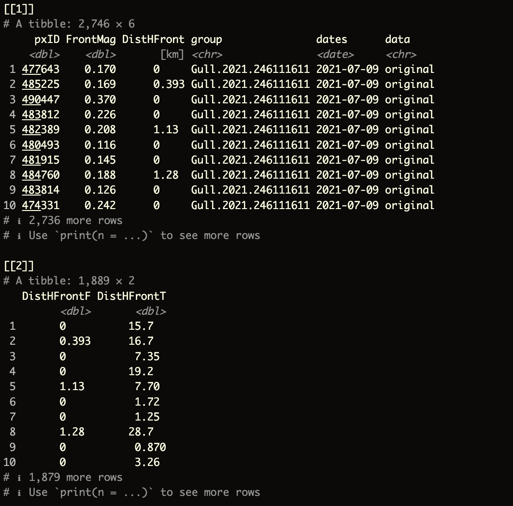
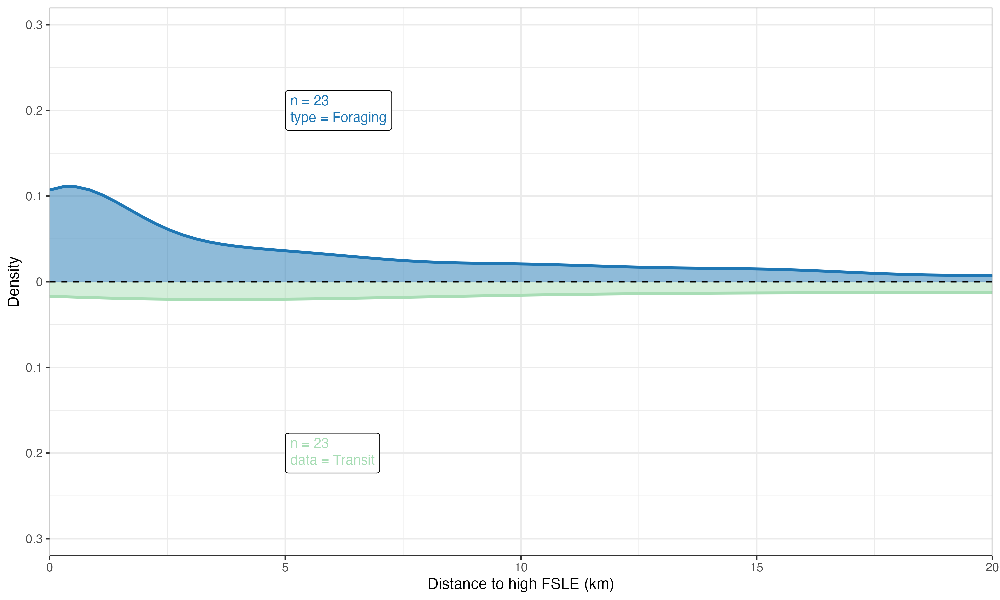

# Source the helper functions and input files
source("zscripts/z_helpFX.R") # Load helper functions from the script
source("zscripts/z_inputFls_local.R") # Load input files specific to this workshop
ForagingTransit <- function(indirFor, indirTran) {
# Load required libraries
library(dplyr) # For data manipulation
library(ggplot2) # For data visualization
library(units) # For handling units of measurement
library(ggtext) # For enhanced text rendering in ggplot2
library(gdata) # For combining data frames of different lengths
# List all .rds files in the foraging behavior directory
lsO <- list.files(path = indirFor,
pattern = ".rds",
all.files = TRUE,
full.names = TRUE,
recursive = FALSE)
# List all .rds files in the transit behavior directory
lsS <- list.files(path = indirTran,
pattern = ".rds",
all.files = TRUE,
full.names = TRUE,
recursive = FALSE)
# Data manipulation for the original (foraging) data
dfOr <- lapply(lsO, function(x) {
sgl <- readRDS(x) # Read each .rds file
sgl$DistHFront <- units::set_units(sgl$DistHFront, "km") # Set the distance to ocean front in kilometers
sgl})
dfOr <- do.call(rbind, dfOr) %>% # Combine all foraging data into a single dataframe
as_tibble() %>%
dplyr::mutate(data = "original") # Add a column to label this as original data
# Data manipulation for the simulation (transit) data
dfS <- lapply(lsS, function(x) {
sgl <- readRDS(x) # Read each .rds file
sgl$DistHFront <- units::set_units(sgl$DistHFront, "km") # Set the distance to ocean front in kilometers
sgl})
dfS <- do.call(rbind, dfS) %>% # Combine all transit data into a single dataframe
as_tibble() %>%
dplyr::mutate(data = "simulation") # Add a column to label this as simulation data
# Merge both datasets (original and simulation)
DFF <- rbind(dfOr, dfS) %>% # Combine original and simulation data into one dataframe
as_tibble()
# Prepare for comparison between Foraging and Transit distances
FO <- dfOr %>%
dplyr::rename(DistHFrontF = DistHFront) %>% # Rename the distance column for foraging data
dplyr::select(DistHFrontF)
FS <- dfS %>%
dplyr::mutate(DistHFrontT = DistHFront) %>% # Rename the distance column for transit data
dplyr::select(DistHFrontT)
# Handle cases where the number of rows in Foraging and Transit datasets differ
if(nrow(FO) != nrow(FS)) {
FF <- gdata::cbindX(FO, FS) %>% # Combine dataframes with different lengths, allowing for missing values
as_tibble() %>%
dplyr::mutate(DistHFrontF = as.numeric(DistHFrontF), # Convert the distances to numeric
DistHFrontT = as.numeric(DistHFrontT))
dfF.ls <- list(DFF, FF) # Store both the merged data and the comparison in a list
} else {
FF <- cbind(FO, FS) %>% # Combine the dataframes directly if they have the same number of rows
as_tibble() %>%
dplyr::mutate(DistHFrontF = as.numeric(DistHFrontF), # Convert the distances to numeric
DistHFrontT = as.numeric(DistHFrontT))
dfF.ls <- list(DFF, FF) # Store both the merged data and the comparison in a list
}
# Return the list containing both the full merged dataframe and the comparison dataframe
return(dfF.ls)
}10 Distance Plots
To plot the relationship between ocean fronts and marine megafauna (e.g., seabirds), we will use a smooth kernel density estimate (KDE). A KDE is a smoothed version of a histogram that provides a continuous probability density function, making it easier to visualize the underlying distribution of the data and the relationship between the two variables.
10.1 Merging the output data
The function (and script) below will create a combined list() containing two elements.
- The first element will be a combined dataframe of the ocean front analyses by
birdID - The second element will be a dataframe that provides distance information, split by
ForagingandTransitbehaviors
This approach allows for greater control and makes the process more efficient when generating plots and other outputs.
ForagingTransit function
The function requires only two arguments:
indirFor: directory where theocean frontanalyses for theforagingbehavior are stored (e.g.,outputs_sb/sb_LSP_F).indirTran: directory where theocean frontanalyses for thetransitbehavior are stored (e.g.,outputs_sb/sb_LSP_T).
Try running the following code:
dfF <- ForagingTransit(indirFor = "outputs_sb/sb_LSP_F",
indirTran = "outputs_sb/sb_LSP_T")The final output should look like this:

10.2 kernel density plot
To create a kernel density plot we will use ggplot R package
read the
kernel_ggplot function in zscripts/f04_MergeClean.R
The entire function above is located in the zscripts directory. You can also find it below if you want to paste it into a new script in your RStudio console. This function will require three argument:
input: the output from theForagingTransitfunctionxlabs: labels on the x axisylabs: labels on the y axis
1. Define General Settings for the Plot Output
theme_op01 <- theme(plot.title = element_text(face = "plain", size = 20, hjust = 0.5),
plot.tag = element_text(colour = "black", face = "bold", size = 23),
axis.title.x = element_text(size = rel(1.5), angle = 0),
axis.text.x = element_text(size = rel(2), angle = 0),
axis.title.y = element_text(size = rel(1.5), angle = 90),
axis.text.y = element_text(size = rel(2), angle = 0),
legend.title = element_text(colour = "black", face = "bold", size = 15),
legend.text = element_text(colour = "black", face = "bold", size = 13),
legend.key.height = unit(1.5, "cm"),
legend.key.width = unit(1.5, "cm"))2. kernel_ggplot ggplot function
kernel_ggplot <- function(input, xlabs, ylabs) {
# Extract the first and second elements from the input list
df01 <- input[[1]] # This is the combined dataframe of ocean front analyses by birdID
df02 <- input[[2]] # This is the dataframe containing distance information, split by Foraging and Transit
# Create a ggplot object
ggp01 <- ggplot(df02, aes(x = x)) +
# Plot the density curve for the Foraging data (positive density on the top side)
geom_density(aes(x = DistHFrontO, y = after_stat(density)),
lwd = 1, # Line width
colour = "#1f77b4", # Line color
fill = "#1f77b4", # Fill color
alpha = 0.50, # Transparency level
adjust = 0.5) + # Smoothing parameter
# Plot the density curve for the Transit data (negative density on the bottom side)
geom_density(aes(x = DistHFrontS, y = after_stat(-density)),
lwd = 1, # Line width
colour = "#a8ddb5", # Line color
fill = "#a8ddb5", # Fill color
alpha = 0.50, # Transparency level
adjust = 0.5) + # Smoothing parameter
# Add a horizontal dashed line at y = 0 to separate the top and bottom density plots
geom_hline(yintercept = 0, colour = "black", linetype = "dashed") +
# Adjust the x-axis scale to remove extra padding
scale_x_continuous(expand = c(0, 0)) +
# Adjust the y-axis to display absolute values, showing the density on both sides
scale_y_continuous(breaks = seq(-0.4, 0.4, 0.1),
limits = c(-0.32, 0.32),
expand = c(0, 0),
labels = function(x) abs(x)) +
# Set the x-axis limits to zoom in on the relevant data range
coord_cartesian(xlim = c(0, 20)) +
# Add labels for the x-axis and y-axis using the provided arguments
labs(x = xlabs,
y = ylabs) +
# Apply a specific theme for consistent styling
theme_op01 + # Apply a custom theme (assuming 'theme_op01' is defined elsewhere)
theme_bw() + # Apply a basic white background theme
# Add a label to the top plot (Foraging data) showing the sample size and type of data
geom_richtext(inherit.aes = FALSE,
data = tibble(x = 5, y = 0.2,
label = paste("n =", length(unique(df01$group)), "<br>type = Foraging")),
aes(x = x, y = y, label = label),
size = 3.5,
fill = "white",
colour = "#1f77b4", # Text color matching the Foraging plot
label.color = "black",
hjust = 0) +
# Add a label to the bottom plot (Transit data) showing the sample size and type of data
geom_richtext(inherit.aes = FALSE,
data = tibble(x = 5, y = -0.2,
label = paste("n =", length(unique(df01$group)), "<br>data = Transit")),
aes(x = x, y = y, label = label),
size = 3.5,
fill = "white",
colour = "#a8ddb5", # Text color matching the Transit plot
label.color = "black",
hjust = 0)
# Return the completed ggplot object
return(ggp01)
}The kernel_ggplot function, located inzscripts/f04_MergeClean.R, is straightforward to understand and use. To generate the plot, simply run the following command:
# Generate a kernel density plot using the custom kernel_ggplot function
gg_dfF <- kernel_ggplot(input = dfF,
xlabs = "Distance to high FSLE (km)", # Label for the x-axis
ylabs = "Density") # Label for the y-axis
# Save the generated plot as a PNG file
ggsave("figures/LSP_2021-07.png", # File path and name for the output image
plot = gg_dfF, # The plot object to save
width = 10, # Width of the output image in inches
height = 6, # Height of the output image in inches
dpi = 300, # Resolution of the image in dots per inch (high quality)
limitsize = FALSE) # Allow saving of images larger than the default size limits